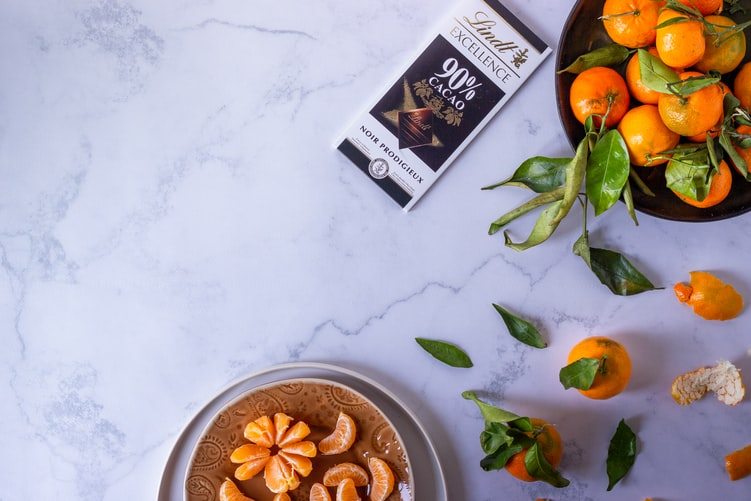

Welcome!
About me
はじめまして、木本栞と申します。
出身は北海道のむかわ町です。札幌の大学を卒業後は東京・埼玉で保育園で栄養士として働いていました。
2020年11月頃からHTML・CSS、JavaScriptを中心に手探りで学習をしています。
＜使用経験があるもの・学習中のもの＞
HTML CSS JavaScript React Firebase
Vercel WordPress Github
